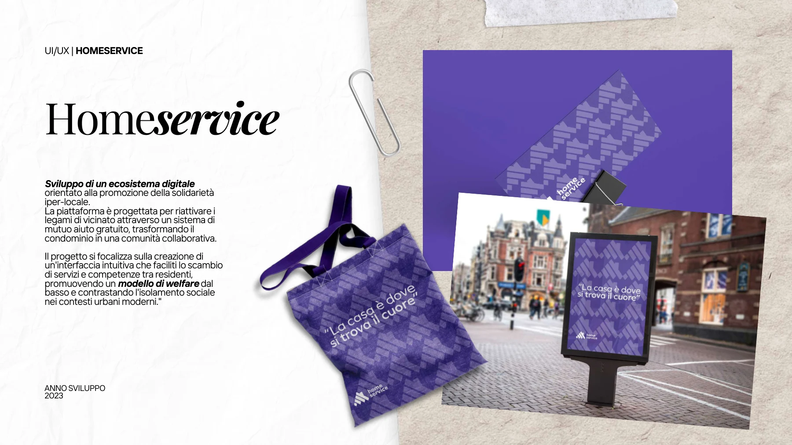
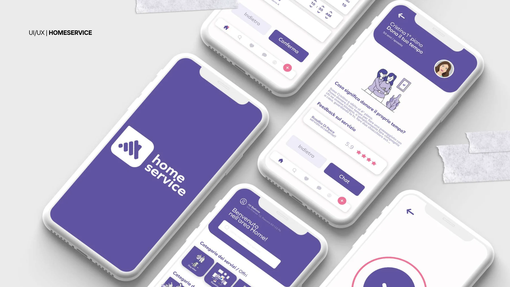
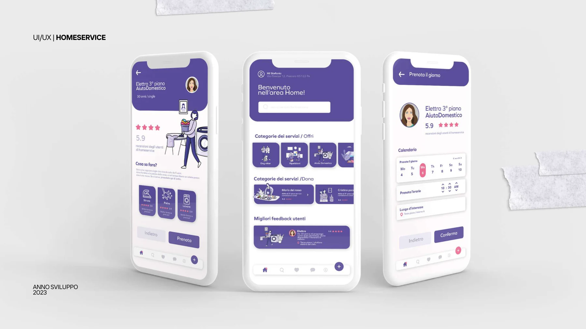
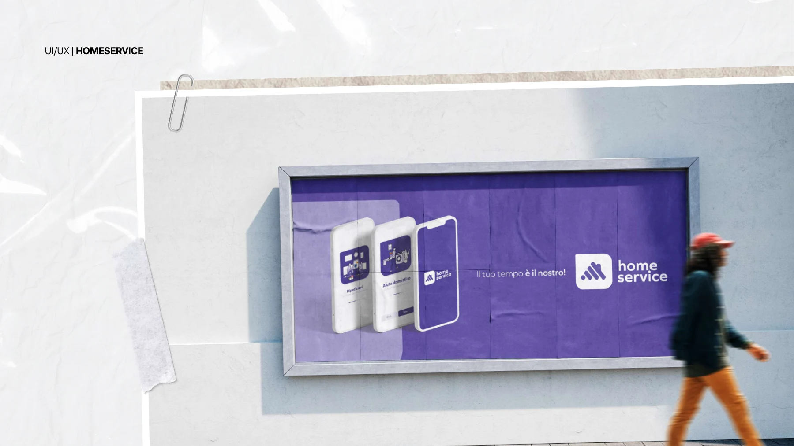

Homeservice
Una piattaforma di mutuo aiuto gratuito tra vicini di casa.
Obiettivo
Facilitare lo scambio di servizi e competenze tra residenti, promuovendo relazioni di vicinato.
Attività documentate
Progettazione di interfacce per un servizio digitale di collaborazione e supporto nella comunità condominiale.




Progetto successivo